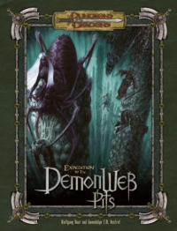

“Expedition to the Demonweb Pits” on the
Shelf of Many Books

Expedition to the Demonweb Pits
D&D 3.5
(3e)
Year
: 2007 (April)
Expedition to the Demonweb Pits
on Amazon
Expedition to the Demonweb Pits
on Amazon
Expedition to the Demonweb Pits
on Amazon
Known monsters from the book:
Abyssal Giant
Aspect of Graz’zt
Aspect of Obox-Ob
Aspect of Yeenoghu
Cambion
Carnevus
Corrupted by the Abyss
Dabus
Elder Viper Tree
Envoy of Lolth
Lamia Noble
Mirror Mephit
Oculus
Ratatosk